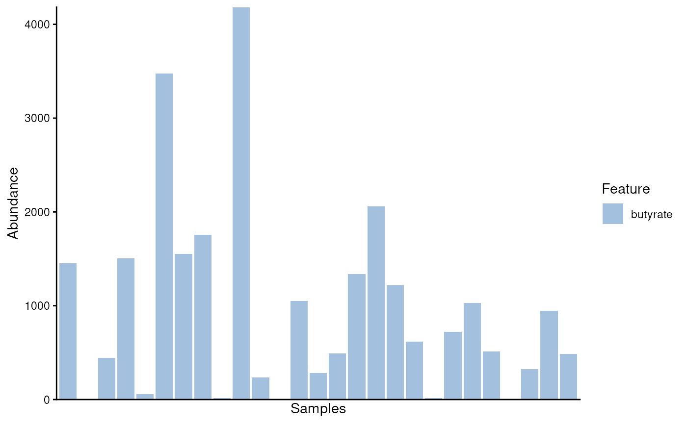
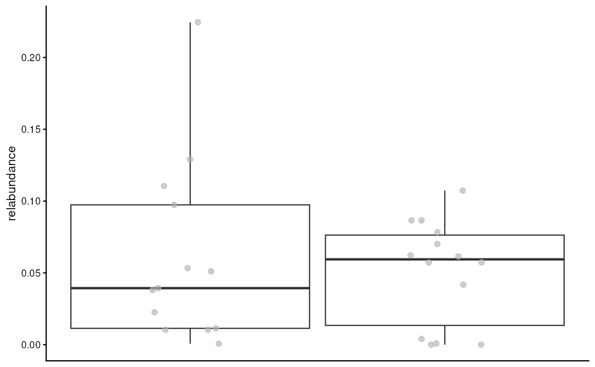
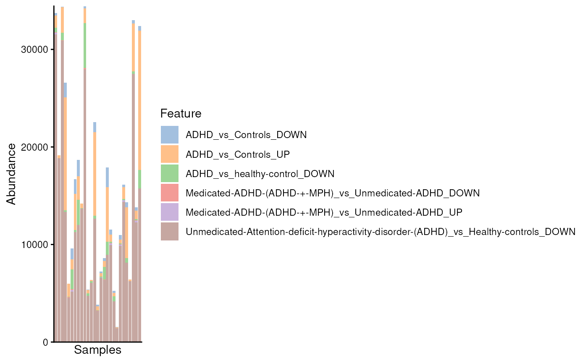
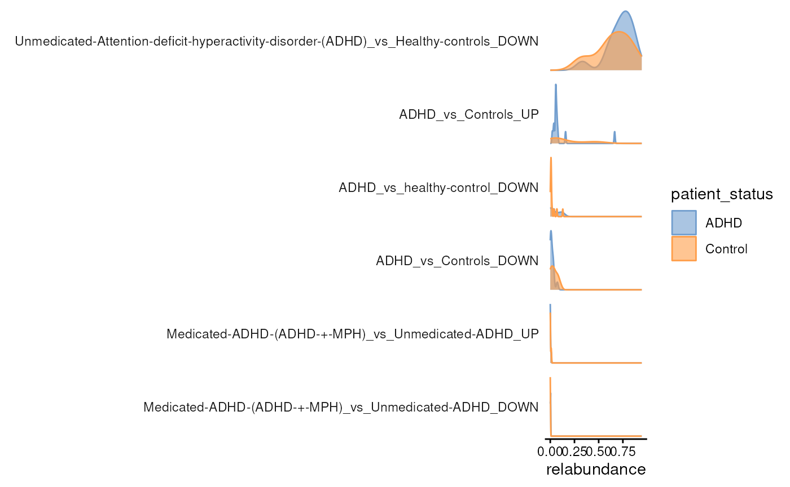
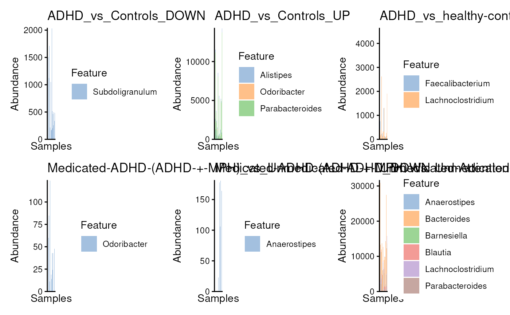

vignettes/msea.Rmd
msea.Rmd
# Import dataset
data("Tengeler2020", package = "mia")
tse <- Tengeler2020
tse <- agglomerateByRank(tse, rank = "Genus")
#> Duplicated labels were made unique.
tse <- transformAssay(tse, method = "relabundance")
tse
#> class: TreeSummarizedExperiment
#> dim: 49 27
#> metadata(1): agglomerated_by_rank
#> assays(2): counts relabundance
#> rownames(49): [Clostridium]_innocuum_group
#> [Eubacterium]_coprostanoligenes_group ... uncultured_2
#> uncultured_bacterium
#> rowData names(6): Kingdom Phylum ... Family Genus
#> colnames(27): A110 A12 ... A35 A38
#> colData names(4): patient_status cohort patient_status_vs_cohort
#> sample_name
#> reducedDimNames(0):
#> mainExpName: NULL
#> altExpNames(0):
#> rowLinks: a LinkDataFrame (49 rows)
#> rowTree: 1 phylo tree(s) (49 leaves)
#> colLinks: NULL
#> colTree: NULL
data("butyrate", package = "ariadne")
butyrate
#> taxname cpd cpd.name
#> 1 Butyricimonas C00246 butyrate
#> 2 Odoribacter C00246 butyrate
#> 3 Agathobacter C00246 butyrate
#> 4 Anaerobutyricum C00246 butyrate
#> 5 Eubacterium ventriosum C00246 butyrate
#> 6 Anaerostipes C00246 butyrate
#> 7 Butyrivibrio C00246 butyrate
#> 8 Coprococcus C00246 butyrate
#> 9 Roseburia C00246 butyrate
#> 10 Shuttleworthia C00246 butyrate
#> 11 Butyricicoccus C00246 butyrate
#> 12 Faecalibacterium C00246 butyrate
#> 13 Flavonifractor C00246 butyrate
#> 14 Pseudoflavonifractor C00246 butyrate
#> 15 Oscillibacter C00246 butyrate
#> 16 Subdoligranulum C00246 butyrate
tse <- addModules(tse, butyrate, key = "Genus", as = "names")
modules <- agglomerateByModule(tse, by = "rows", group = "butyrate")
modules
#> class: TreeSummarizedExperiment
#> dim: 1 27
#> metadata(1): agglomerated_by_rank
#> assays(2): counts relabundance
#> rownames(1): butyrate
#> rowData names(0):
#> colnames(27): A110 A12 ... A35 A38
#> colData names(4): patient_status cohort patient_status_vs_cohort
#> sample_name
#> reducedDimNames(0):
#> mainExpName: NULL
#> altExpNames(0):
#> rowLinks: NULL
#> rowTree: NULL
#> colLinks: NULL
#> colTree: NULL
plotAbundance(modules)
#> Warning: Removed 2 rows containing missing values or values outside the scale range
#> (`geom_bar()`).
plotBoxplot(modules, assay.type = "relabundance", group.by = "patient_status")
graph <- ariadne()
searchPath(graph, taxname ~ bugsig)
#> Path 1:
#> taxname -(BugSigDB)-> bugsig
tax2bugsig <- weavePath(graph, taxname ~ bugsig, init = rowData(tse)$Genus)
#> taxname -(BugSigDB)-> bugsig
#> Warning: names for 871 bugsig ids not found.
head(tax2bugsig)
#> taxname bugsig bugsig.name
#> 1 Bacteroides 20603222/1/1 severely-autistic_vs_non-sibling-control_UP
#> 2 Parabacteroides 20603222/1/1 severely-autistic_vs_non-sibling-control_UP
#> 3 Bacteroides 20613793/1/2 Case-1_vs_Control-1_DOWN
#> 4 Parabacteroides 20613793/1/2 Case-1_vs_Control-1_DOWN
#> 5 Bacteroides 20613793/2/1 Case-2_vs_Control-2_UP
#> 6 Faecalibacterium 20613793/2/1 Case-2_vs_Control-2_UP
mod.names <- levels(tax2bugsig$bugsig.name)
adhd.mods <- mod.names[grepl("ADHD", mod.names)]
adhd.mods
#> [1] "ADHD_vs_Controls_DOWN"
#> [2] "ADHD_vs_Controls_UP"
#> [3] "ADHD_vs_healthy-control_DOWN"
#> [4] "Medicated-ADHD-(ADHD-+-MPH)_vs_Unmedicated-ADHD_DOWN"
#> [5] "Medicated-ADHD-(ADHD-+-MPH)_vs_Unmedicated-ADHD_UP"
#> [6] "Unmedicated-Attention-deficit-hyperactivity-disorder-(ADHD)_vs_Healthy-controls_DOWN"
tse <- addModules(tse, tax2bugsig, key = "Genus", as = "names")
#> Warning in dcast.data.table(modules, widen_form, value.var = "cov", fill = 0):
#> 'fun.aggregate' is NULL, but found duplicate row/column combinations, so
#> defaulting to length(). That is, the variables [taxname, bugsig.name] used in
#> 'formula' do not uniquely identify rows in the input 'data'. In such cases,
#> 'fun.aggregate' is used to derive a single representative value for each
#> combination in the output data.table, for example by summing or averaging
#> (fun.aggregate=sum or fun.aggregate=mean, respectively). Check the resulting
#> table for values larger than 1 to see which combinations were not unique. See
#> ?dcast.data.table for more details.
modules <- agglomerateByModule(tse, by = "rows", group = adhd.mods)
modules
#> class: TreeSummarizedExperiment
#> dim: 6 27
#> metadata(1): agglomerated_by_rank
#> assays(2): counts relabundance
#> rownames(6): ADHD_vs_Controls_DOWN ADHD_vs_Controls_UP ...
#> Medicated-ADHD-(ADHD-+-MPH)_vs_Unmedicated-ADHD_UP
#> Unmedicated-Attention-deficit-hyperactivity-disorder-(ADHD)_vs_Healthy-controls_DOWN
#> rowData names(0):
#> colnames(27): A110 A12 ... A35 A38
#> colData names(4): patient_status cohort patient_status_vs_cohort
#> sample_name
#> reducedDimNames(0):
#> mainExpName: NULL
#> altExpNames(0):
#> rowLinks: NULL
#> rowTree: NULL
#> colLinks: NULL
#> colTree: NULL
plotAbundance(modules)
#> Warning: Removed 37 rows containing missing values or values outside the scale range
#> (`geom_bar()`).
plotAbundanceDensity(
modules,
assay.type = "relabundance",
layout = "density",
colour.by = "patient_status"
)
idx <- apply(rowData(tse)[adhd.mods], 2L, function(x) which(x != 0L))
to_keep <- lengths(idx) != 0L
idx <- idx[to_keep]
adhd.mods <- adhd.mods[to_keep]
res <- lapply(
seq_along(adhd.mods),
function(i) plotAbundance(tse[idx[[i]], ]) + ggtitle(adhd.mods[i])
)
library(patchwork)
wrap_plots(res)
#> Warning: Removed 5 rows containing missing values or values outside the scale range
#> (`geom_bar()`).
#> Warning: Removed 16 rows containing missing values or values outside the scale range
#> (`geom_bar()`).
#> Warning: Removed 18 rows containing missing values or values outside the scale range
#> (`geom_bar()`).
#> Warning: Removed 12 rows containing missing values or values outside the scale range
#> (`geom_bar()`).
#> Warning: Removed 19 rows containing missing values or values outside the scale range
#> (`geom_bar()`).
#> Warning: Removed 46 rows containing missing values or values outside the scale range
#> (`geom_bar()`).
R session information:
#> R version 4.6.0 (2026-04-24)
#> Platform: x86_64-pc-linux-gnu
#> Running under: Ubuntu 24.04.4 LTS
#>
#> Matrix products: default
#> BLAS: /usr/lib/x86_64-linux-gnu/openblas-pthread/libblas.so.3
#> LAPACK: /usr/lib/x86_64-linux-gnu/openblas-pthread/libopenblasp-r0.3.26.so; LAPACK version 3.12.0
#>
#> locale:
#> [1] LC_CTYPE=en_US.UTF-8 LC_NUMERIC=C LC_TIME=en_US.UTF-8 LC_COLLATE=en_US.UTF-8
#> [5] LC_MONETARY=en_US.UTF-8 LC_MESSAGES=en_US.UTF-8 LC_PAPER=en_US.UTF-8 LC_NAME=C
#> [9] LC_ADDRESS=C LC_TELEPHONE=C LC_MEASUREMENT=en_US.UTF-8 LC_IDENTIFICATION=C
#>
#> time zone: UTC
#> tzcode source: system (glibc)
#>
#> attached base packages:
#> [1] stats4 stats graphics grDevices utils datasets methods base
#>
#> other attached packages:
#> [1] patchwork_1.3.2 miaViz_1.21.1 ggraph_2.2.2
#> [4] ggplot2_4.0.3 mia_1.21.3 TreeSummarizedExperiment_2.21.0
#> [7] Biostrings_2.81.3 XVector_0.53.0 SingleCellExperiment_1.35.1
#> [10] MultiAssayExperiment_1.39.0 SummarizedExperiment_1.43.0 Biobase_2.73.1
#> [13] GenomicRanges_1.65.0 Seqinfo_1.3.0 IRanges_2.47.2
#> [16] S4Vectors_0.51.5 BiocGenerics_0.59.8 generics_0.1.4
#> [19] MatrixGenerics_1.25.0 matrixStats_1.5.0 ariadne_0.2.7
#> [22] BiocStyle_2.41.0
#>
#> loaded via a namespace (and not attached):
#> [1] splines_4.6.0 MultiFactor_0.1.2 ggplotify_0.1.3 filelock_1.0.3
#> [5] tibble_3.3.1 polyclip_1.10-7 XML_3.99-0.23 DirichletMultinomial_1.55.0
#> [9] lifecycle_1.0.5 httr2_1.2.2 vroom_1.7.1 lattice_0.22-9
#> [13] MASS_7.3-65 SnowballC_0.7.1 magrittr_2.0.5 sass_0.4.10
#> [17] rmarkdown_2.31 jquerylib_0.1.4 yaml_2.3.12 otel_0.2.0
#> [21] DBI_1.3.0 RColorBrewer_1.1-3 abind_1.4-8 purrr_1.2.2
#> [25] yulab.utils_0.2.4 tweenr_2.0.3 rappdirs_0.3.4 gdtools_0.5.1
#> [29] ggrepel_0.9.8 tokenizers_0.3.0 irlba_2.3.7 tidytree_0.4.7
#> [33] rentrez_1.2.4 vegan_2.7-5 pkgdown_2.2.0 permute_0.9-10
#> [37] DelayedMatrixStats_1.35.0 codetools_0.2-20 DelayedArray_0.39.3 scuttle_1.23.1
#> [41] ggforce_0.5.0 tidyselect_1.2.1 aplot_0.2.9 farver_2.1.2
#> [45] ScaledMatrix_1.21.0 viridis_0.6.5 BiocFileCache_3.3.0 jsonlite_2.0.0
#> [49] BiocNeighbors_2.7.2 decontam_1.33.0 tidygraph_1.3.1 scater_1.41.2
#> [53] systemfonts_1.3.2 tools_4.6.0 ggnewscale_0.5.2 progress_1.2.3
#> [57] treeio_1.37.0 ragg_1.5.2 Rcpp_1.1.1-1.1 glue_1.8.1
#> [61] gridExtra_2.3 SparseArray_1.13.2 xfun_0.59 mgcv_1.9-4
#> [65] dplyr_1.2.1 withr_3.0.3 BiocManager_1.30.27 fastmap_1.2.0
#> [69] bluster_1.23.0 digest_0.6.39 rsvd_1.0.5 R6_2.6.1
#> [73] gridGraphics_0.5-1 textshaping_1.0.5 RSQLite_3.53.2 ecodive_2.2.6
#> [77] tidyr_1.3.2 fontLiberation_0.1.0 data.table_1.18.4 DECIPHER_3.9.0
#> [81] prettyunits_1.2.0 graphlayouts_1.2.4 httr_1.4.8 htmlwidgets_1.6.4
#> [85] S4Arrays_1.13.0 pkgconfig_2.0.3 gtable_0.3.6 blob_1.3.0
#> [89] S7_0.2.2 janeaustenr_1.0.0 htmltools_0.5.9 fontBitstreamVera_0.1.1
#> [93] bookdown_0.47 scales_1.4.0 png_0.1-9 ggfun_0.2.0
#> [97] knitr_1.51 tzdb_0.5.0 reshape2_1.4.5 rncl_0.8.9
#> [101] nlme_3.1-169 curl_7.1.0 cachem_1.1.0 stringr_1.6.0
#> [105] parallel_4.6.0 vipor_0.4.7 arrow_24.0.0 desc_1.4.3
#> [109] pillar_1.11.1 grid_4.6.0 vctrs_0.7.3 BiocSingular_1.29.0
#> [113] dbplyr_2.6.0 beachmat_2.29.0 cluster_2.1.8.2 beeswarm_0.4.0
#> [117] evaluate_1.0.5 readr_2.2.0 cli_3.6.6 compiler_4.6.0
#> [121] rlang_1.2.0 crayon_1.5.3 tidytext_0.4.3 labeling_0.4.3
#> [125] plyr_1.8.9 forcats_1.0.1 fs_2.1.0 ggbeeswarm_0.7.3
#> [129] ggiraph_0.9.6 stringi_1.8.7 viridisLite_0.4.3 BiocParallel_1.47.0
#> [133] assertthat_0.2.1 lazyeval_0.2.3 fontquiver_0.2.1 Matrix_1.7-5
#> [137] hms_1.1.4 sparseMatrixStats_1.25.0 bit64_4.8.2 KEGGREST_1.53.1
#> [141] igraph_2.3.2 memoise_2.0.1 bslib_0.11.0 rotl_3.1.1
#> [145] ggtree_4.3.0 bit_4.6.0 ape_5.8-1